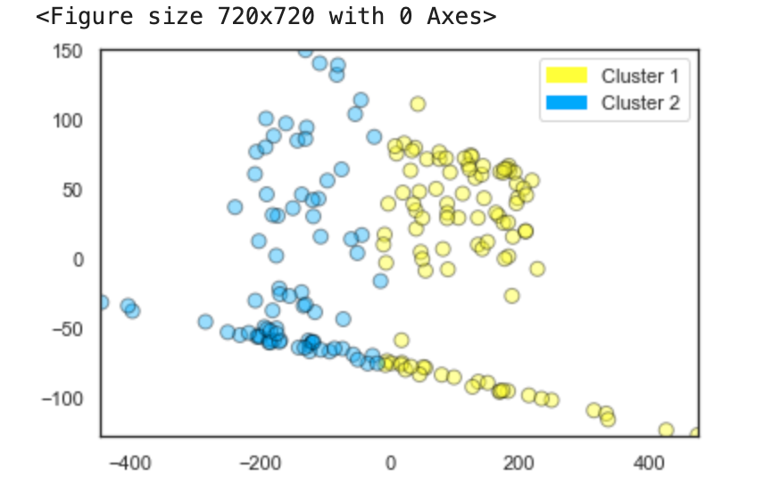
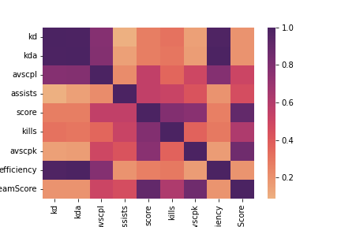
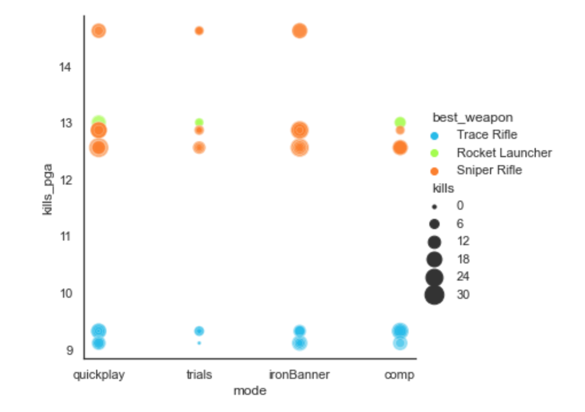

How do we make sense of data, and why does it merit a whole article? It can't be that complicated.
Surely that's what graphs and stuff are for ... just shove your data into
some kind of chart and the job is done, right?
Well, not really.
It's become easier and easier over the last few years to create charts
and graphs. Lots more tools are available, many of them very
intuitive to use even for a non-expert, and more often than not the
design options they offer are so well-curated that even a complete beginner
can produce a beautiful and clear chart in just a few steps.
And this is a problem, because data visualisation is about so much more than visualising data.
It's sifting the data for meaning. It's cleaning, filtering and merging.
It's crafting a message. It's a set of design choices around brand and audience.
And most of all it's a response.
A response to what? Well, it's kind of your job to figure that out.
If you're making something to visualise data in some way here's what you need to be asking yourself.
- What problem does this solve?
- What question could this answer?
- If I had an answer, what would it look like?
- Who will be looking at it? Why?
To explore these questions, let's dive into an example.
What problem am I solving?
I spend several hours a week playing Destiny 2, an online multiplayer first-person shooter.
Like many games in this genre it has a player-versus-player (PvP) mode where you can
test your skills against other players in a controlled arena separate from the main
story missions. Emotions run hot in this type of gameplay, and accusations of cheating are commonplace.
Being a middle-aged gamer with below-average
reflexes I often come off worse in these competitions, and
of course that's very frustrating. Occasionally I get matched
against people so skilled, so godly, that
I never stood a chance of beating them.
When that happens I can find myself hovering over the 'Report' button and
asking myself this crucial question:
"Do I really believe they were cheating - or am I just upset because I lost?"
I could really use a simple visual look up that tells me at a glance whether
I'm justified in reporting a player, or whether I just need to get over it.
One thing that sets Destiny as a game apart from many others is its very rich, well-structured and
well-documented API - hence the varied ecosystem of supporting apps and services.
With a developer account I can access game data for myself and other
players, and using that I can do pretty much any analysis that takes my fancy.
I started with an assumption: it should be possible to get some data to analyse who the likely cheats are in
the games I'd played recently. That sort of thing would show up in their game statistics, wouldn't it? Simple.
All I needed to do is extract all of the game stats and then try out different analyses
until I get an answer.

And this is exactly what I did, using the API to extract a massive file for a sample of players.
I included myself as a control (since I know I'm not cheating!). For the same reason I included a couple of friends
who I know absolutely would never do so, and for good measure I got data on a small number of professional streamers
with excellent reputations for fair play. For balance I then included at least one known cheater (recently and
very publicly banned) and a few people I've played with and against in the past and had doubts about.
Armed with this data, I built several different models and reviewed the results. I won't bore the reader
with the details of each one because, as it turned out, none of them could identify any meaningful pattern.
The k-means model shown on the right looked very promising, but when I delved into it further with a principal
components analysis it indicated that match duration and total team score (the number of kills by
everyone in the player's team combined) were most significant
factors in whether that person was likely to be cheating. That clearly can't be right in this context.
So what could the data tell me?
Well, skilled players tend to be good across both competitive and casual game modes, and they play more matches overall
(getting in a lot of practice).
Obviously they win more, with a higher kills-to-deaths ratio (K/D), and more kills per game. They also do better
on the percentage of precision shots with difficult-to-master weapons like sniper rifles.
Lots of these are also what you'd expect to see if someone were cheating ... so what's the crucial
indicator for high-skill versus illegal mods?
I honestly couldn't tell you. My models either made no sense at all, or were impossibly 100% efficient.
Sometimes both at once!
And the more different models I built and the more I tweaked the parameters, the more I lost sight
of the problem I was originally trying to solve.
Time for a sense check
Thinking about all the factors I'd added to the model, it became obvious that firstly there were too many, and secondly many of them were redundant.

A good example of this is the range of stats about the number of kills.
Average-score-per-life (avscpl) reflects how many kills a player can get before
they're brought down by an opponent.
This will be reflected in the kills-to-deaths ratio and also efficiency.
Number of kills overall is strongly correlated to score, and so on. This is very
clear when we look at the correlation matrix on the right, with all the darker-shaded areas
around these particular factors.
Another factor which could be skewing the analysis is the player's choice of class. Options are:
- Titan - strong and resilient. Basically a tank with fists.
- Warlock - healing and support. Flying, hovering, and looking fabulous.
- Hunter - mobile and sneaky. Jumping, dodging, can go invisible.
There's a perception that frequent PvP players are more likely to play hunter, an archetype known for agility and stealth, and indeed several of my sample group play ONLY on hunter and have no characters in either of the other classes. This may or may not be meaningful, but it's certainly a balance issue for my dataset. I could remove it from the analysis, but that would just be more tinkering around the edges without a clear goal. It's time to go back to the beginning and remind myself what problem I'm trying to solve.
What question does this thing answer?
Thinking back to my original scenario, my issue here is not that I want to build a fully functional cheat detector. What I need is a way to see whether someone's performance against me seems feasible given their game history. The real question is this:
"Should I have expected this player to beat me?"
I don't need machine learning models to answer that. I can look at the other player's character, build and gear choices, and use my own knowledge of the game's context to make a judgement.
- Are they using the strongest weapon types?
- Are they are using known exploits?
- Are they using particlar exotic weapons or armour that add extra abilities?
- Are they at a significantly higher level than me?
And of course I need to take a good hard look at myself too.
- Are we playing on a PvP map that I'm not very familiar with?
- Am I using the right set up and play style for that map?
- Did I equip weapons or abilities that I haven't had enough practice with?
When you're taking heavy and sustained fire from Mad Skillz McAimbot it's clearly not the time to pause for introspection, but it's a good habit to develop post-match. It's entirely possible that nobody here is cheating, and I simply need to 'git gud'.
If I had an answer, what would it look like?

We're getting closer to a solution. With the data I've extracted I can review a player's gear, build and
level. I can also look into their game history to see whether their win status or their kill count seems feasible.
Existing tracker apps can also do this, but they usually centre around a player's
Elo rating.
For me this feels unhelpful in this context, because it only counts wins and losses.
Win a game and you move up, lose a game and you move down.
In a multiplayer activity where there can be (depending on match settings) up to six players per team, it's
not an accurate measure of each player's performance.
Someone with a high Elo could simply have been teamed up with very high-skill players - a 'carry',
where the less-skilled player gets an easy ride with their team mates doing all the hard work. By the same token
someone with a streak of losses may actually be very good, but has been repeatedly matched with lower-ranked teammates in
an effort to balance the lobby. Elo ratings work best in one-on-one scenarios.
In the API documentation I found that players are assigned a 'combat rating' which takes into account
each person's individual performance and their contribution to the match result. This makes more sense to me,
so I'll use that along with detailed data on things like the percentage of precision shots, and the usage of
particular weapon archetypes and character builds which suggest careful tuning of attributes.
The scatter plot shows what some of that data looks like when plotted against kill
count and all-time per-game average. This is starting to resemble something that
could help with my particular question.

Here's where I abandoned complex models and started back at the beginning,
writing a new script to pull out only the results of my latest match.
Each time I play, if I have doubts, I can refresh this page and take a quick look at each player to see
if I can spot any unusual patterns.
It's definitely progress, but there are still some issues. For one - it's ugly!
I built this based on something far more beautiful,
this tutorial on connecting to an API with javascript,
and then I played around with the colour gradients to indicate win/loss status (the colour at the top of the card) and the
comparative combat rating (the stripe in the centre). I don't like how it looks right now, but colours are easy to tweak later.
What's more critical is deciding how to arrange this data. Is the colour coding informative or
just distracting? Does the text adequately explain what these things mean?
Are the items in a logical or intuitive order for the reader? What's the
first thing I want to know when I look at this, and which items do I want to stand out?
The priority here is the comparison; I want this to be obvious at a glance. Is this person
doing much, much better than they normally would? So we have three things to convey.
- direction of travel (better/worse)
- the extent of the difference (big/small), and
- a value judgement (good/bad).